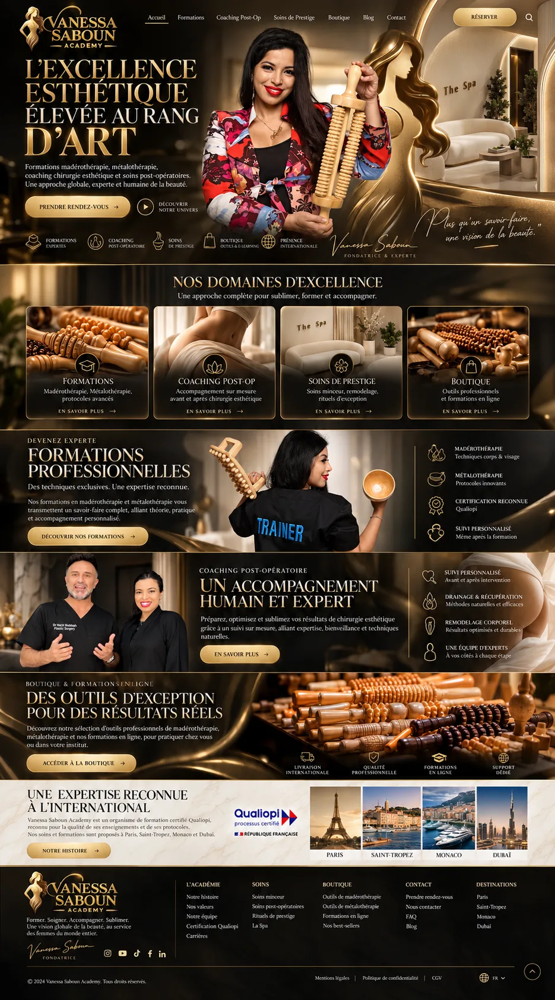
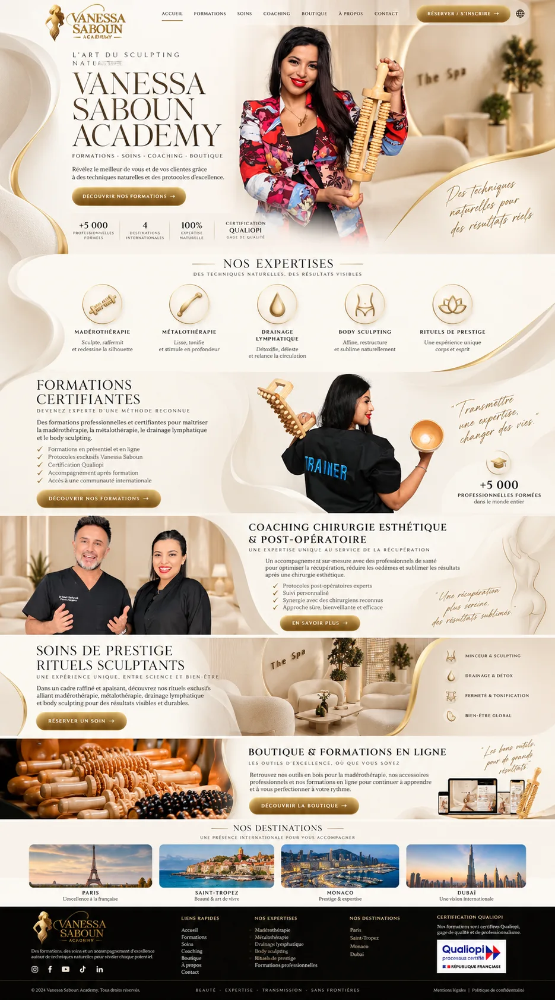
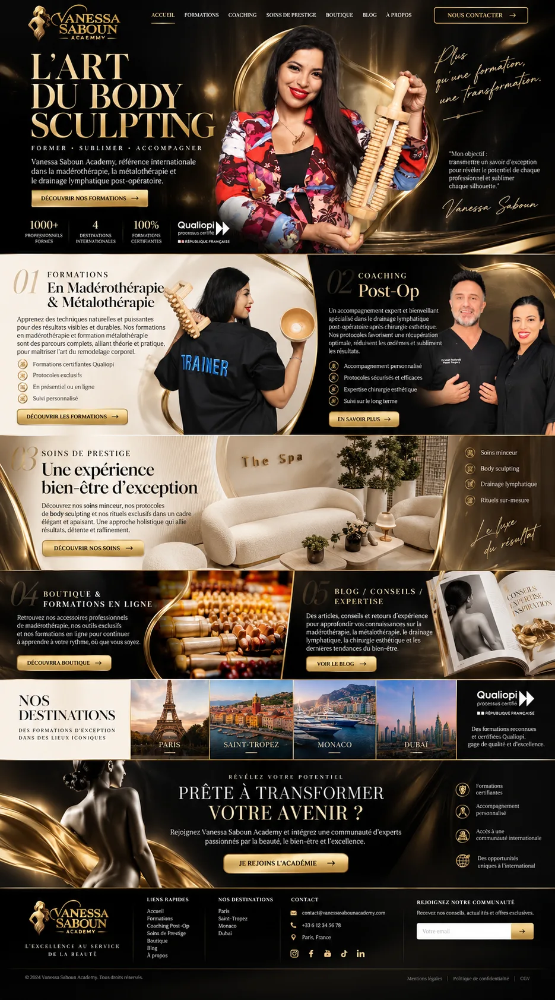
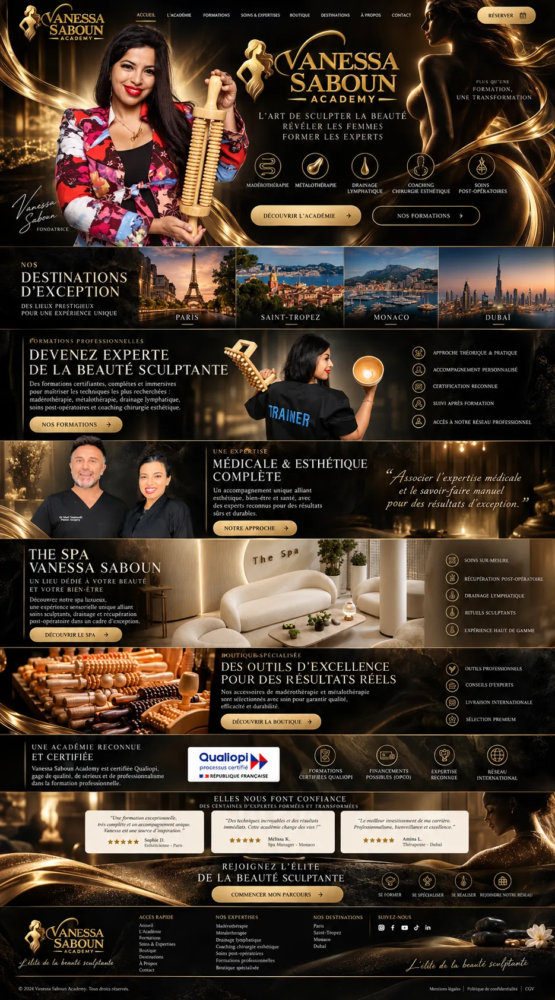
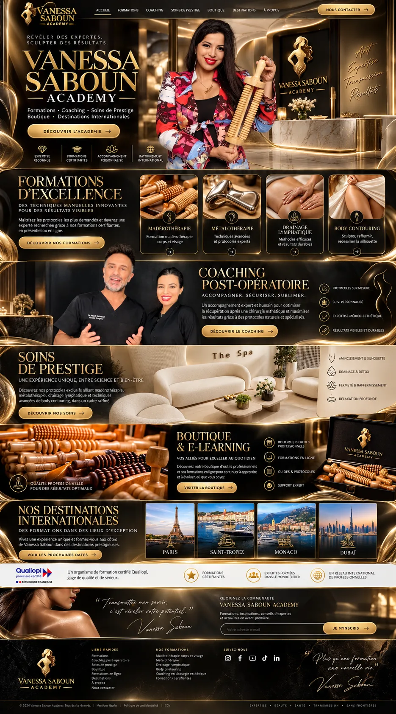
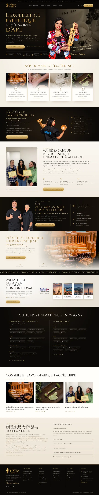
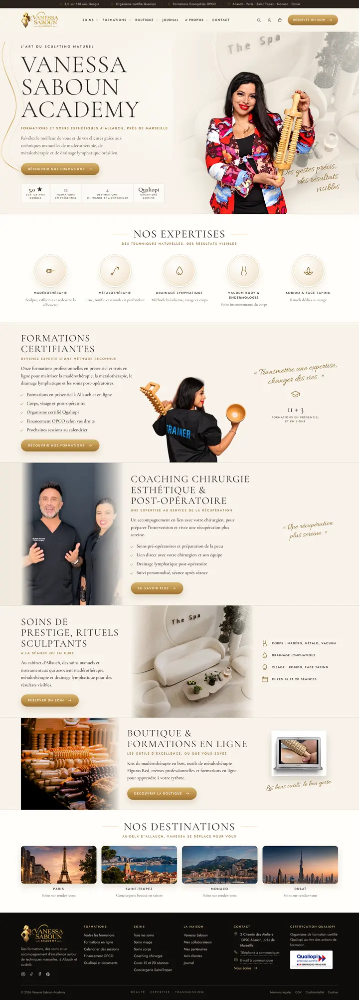
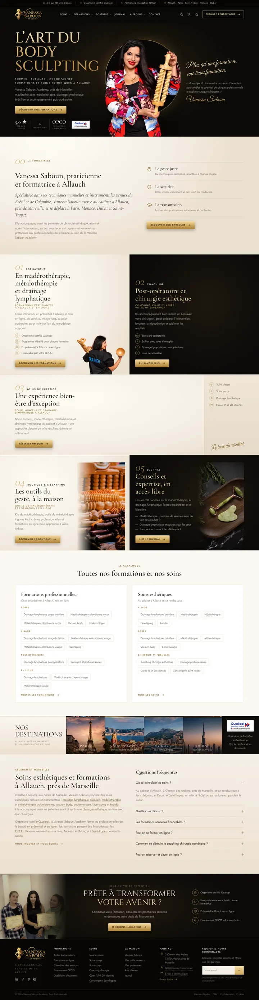
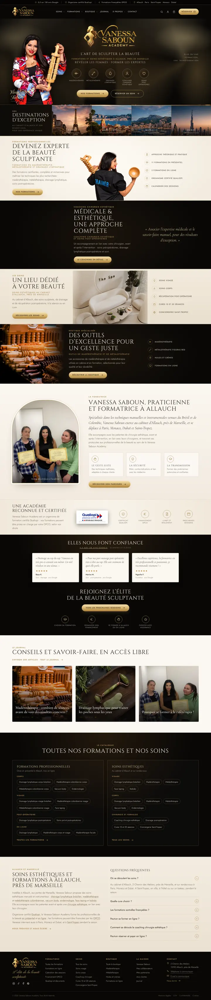
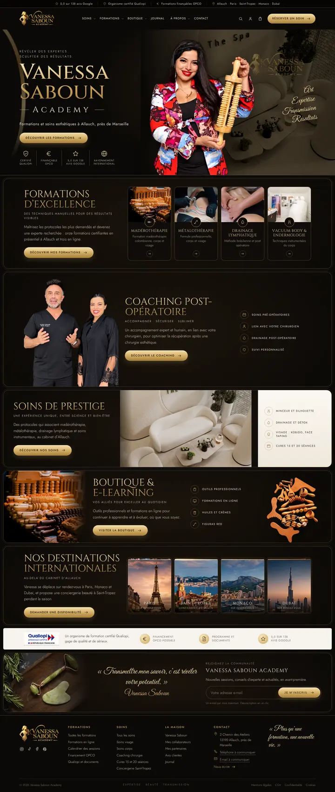

Les cinq maquettes
Cliquez sur un design pour voir ses notes, ou ouvrez directement la maquette. Dans chaque maquette, la barre en bas de l’écran permet de passer de l’une à l’autre et de revenir ici.

1Noir et or« L’excellence esthétique élevée au rang d’art »
2Ivoire« L’art du sculpting naturel »
3Chapitres 01–05« L’art du body sculpting »
4Immersive« L’art de sculpter la beauté »
5Académie internationale« Révéler des expertes. Sculpter des résultats. »
Les noms sont provisoires et tirés de chaque design ; vos fichiers n’en donnaient pas.
Notes par proposition
Proposition 1 · concept « L’excellence esthétique élevée au rang d’art »
Noir et or

Version 2 · vos retours appliqués
- Moins de noir : alternance ivoire (domaines), noir (formations), marbre clair (fondatrice), noir (coaching), ivoire (boutique), puis bandes claires pour le contenu SEO. Le hero et le footer restent noirs pour garder l’identité.
- Nouvelle section « Vanessa Saboun, praticienne et formatrice à Allauch » : parcours et 3 engagements repris du dossier, photo réelle des élèves certifiées.
- Nouveaux blocs SEO : catalogue complet (14 formations, 14 soins en liens), journal (3 articles réels), texte local Allauch / Marseille avec maillage interne, FAQ de 6 questions.
- Sous-titres H2 porteurs de mots-clés (« en madérothérapie, métalothérapie et drainage lymphatique », « Coaching chirurgie esthétique et soins post-opératoires »…).
- Bandeau défilant des prestations entre la boutique et l’international, en écho aux kits spa de référence.
Éléments visuels conservés
- Titre du hero sur 4 lignes or et ivoire, Vanessa au centre devant l’univers spa, citation manuscrite et signature.
- Les 5 pictogrammes sous le hero, les 4 cartes « Nos domaines d’excellence » avec médaillon central.
- Les bandeaux Formations, Coaching et Boutique avec leur liste latérale filetée d’or.
- La bande marbre « Expertise reconnue » : logo Qualiopi et 4 destinations en cadres blancs.
- Le footer en colonnes avec signature manuscrite.
Palette
- #0B0907Noir profond
- #14100CPanneau
- #CFA95FOr
- #F0D9A0Or clair
- #EFE6D6Ivoire texte
- #F2EEE7Marbre
Typographies
Cinzel (titres capitales) · Cormorant Garamond (texte) · Pinyon Script (citation, signature)
Responsive
- Hero empilé : titre, CTA et pictogrammes puis Vanessa ; citation masquée sous 640 px.
- Cartes domaines en liste image + texte sur mobile.
- Listes latérales en 2 colonnes (tablette) puis 1 colonne.
- Destinations en 2 × 2.
Améliorations UX/UI et pourquoi
- Bouton « Découvrir notre univers » (lecture vidéo) remplacé par le lien « Découvrir les formations ».Aucune vidéo n’existe dans les fichiers, et le hero sert désormais les deux publics : rendez-vous pour les clientes, formations pour les professionnelles.
- Les 5 pictogrammes du hero deviennent des accès rapides cliquables.Ils étaient décoratifs ; ils raccourcissent maintenant le chemin vers chaque univers.
- Listes latérales cliquables et libellés vérifiés (« Suivi même après la formation » retiré).Promesse absente du dossier ; remplacée par Qualiopi et Financement OPCO, confirmés.
- Les 4 réassurances de la bande Boutique (livraison internationale, support dédié…) deviennent les 4 catégories réelles.Informations non confirmées ; les catégories existent et orientent mieux.
- Bande internationale réécrite et note Google ajoutée en une ligne.Qualiopi concerne la formation, les destinations concernent les soins sur rendez-vous ; la note est la seule preuve sociale de cette maquette.
Structure des titres de la page (H1 → H3)
H1L’excellence esthétique élevée au rang d’art — Formations et soins esthétiques à Allauch, près de MarseilleH2Nos domaines d’excellenceH3FormationsH3Coaching post-opH3Soins de prestigeH3BoutiqueH2Formations professionnelles en madérothérapie, métalothérapie et drainage lymphatiqueH2Vanessa Saboun, praticienne et formatrice à AllauchH3Le geste justeH3La sécuritéH3La transmissionH2Un accompagnement humain et expert Coaching chirurgie esthétique et soins post-opératoiresH2Des outils d’exception pour un geste juste Outils de madérothérapie, de métalothérapie et formations en ligneH2Une expertise reconnue, d’Allauch à l’internationalH2Toutes nos formations et nos soinsH3Formations professionnellesH3Soins esthétiquesH2Conseils et savoir-faire, en accès libreH3Madérothérapie : combien de séances avant de voir des résultats concrets ?H3Drainage lymphatique pour traiter les poches sous les yeuxH3Pourquoi se former à la cafétérapia ?H2Soins esthétiques et formations à Allauch, près de MarseilleH2Questions fréquentes
Proposition 2 · concept « L’art du sculpting naturel »
Ivoire

Éléments visuels conservés
- Fond ivoire lumineux, ruban doré, nom de la marque en capitales fines sur 3 lignes.
- Bandeau de 4 chiffres sous le CTA, médaillons « Nos expertises ».
- Vanessa « Trainer » au centre de la section Formations avec citation manuscrite.
- Coaching avec photo du duo et coches, soins avec image centrale et liste, boutique avec visuel e-learning.
- 4 destinations aux angles arrondis, footer noir avec Qualiopi et devise de bas de page.
Palette
- #F8F3EBIvoire
- #F1E9DDSable
- #2A231CEncre
- #B98B45Or
- #8A6326Or foncé (textes)
- #0F0D0BNuit (footer)
Typographies
Cormorant Garamond (titres fins et texte) · Jost (libellés espacés) · Allura (manuscrit)
Responsive
- Hero empilé, chiffres en grille 2 × 2.
- Médaillons sur 3 puis 2 colonnes.
- Chaque section : image en tête, puis texte, puis liste.
- Ruban doré masqué sur mobile pour ne pas croiser le texte.
Améliorations UX/UI et pourquoi
- « +5 000 professionnelles formées » et « 100 % expertise naturelle » remplacés par 5,0 sur 138 avis Google et 11 formations en présentiel.Chiffres absents du dossier ; ceux retenus y figurent.
- Médaillons devenus des liens vers les pages soins ; « Body sculpting » et « Rituels de prestige » renommés en prestations réelles.Vacuum body et endermologie, kobido et face taping sont au catalogue ; les intitulés génériques n’ont pas de page.
- CTA d’en-tête « Réserver / S’inscrire » ramené à « Réserver un soin ».Un bouton, une action ; l’inscription passe par Formations, toujours visible.
- Globe de langue retiré.Aucune version anglaise n’est prévue dans l’arborescence ; à réintégrer si elle l’est.
- Petits textes dorés passés en or foncé.L’or clair du concept n’atteint pas un contraste lisible sur ivoire.
- Manuscrit du hero : « Des gestes précis, des résultats visibles ».Formule du dossier, moins promissoire que « résultats réels ».
Structure des titres de la page (H1 → H3)
H1L’art du sculpting naturel Vanessa Saboun Academy — Formations et soins esthétiques à Allauch, près de MarseilleH2Nos expertisesH3MadérothérapieH3MétalothérapieH3Drainage lymphatiqueH3Vacuum body & endermologieH3Kobido & face tapingH2Formations certifiantesH2Coaching chirurgie esthétique & post-opératoireH2Soins de prestige, rituels sculptantsH2Boutique & formations en ligneH2Nos destinations
Proposition 3 · concept « L’art du body sculpting »
Chapitres 01–05

Version 2 · vos retours appliqués
- Moins de noir : 03 Soins passe en sable clair, 04 Boutique en ivoire ; restent noirs le hero, 02 Coaching, 05 Journal, le CTA final et le footer.
- Nouveau chapitre « 00 · La fondatrice », typographique (sans photo répétée), qui ouvre la numérotation.
- Catalogue complet en cartes claires, texte local Allauch / Marseille et FAQ de 6 questions avant le CTA final.
- Sous-titres H2 ajoutés à chaque chapitre (« Formations certifiantes à Allauch et en ligne », « Soins minceur et drainage lymphatique à Allauch »…).
Éléments visuels conservés
- Hero noir « L’art du body sculpting », anneau doré autour de Vanessa, citation et signature à droite.
- Chiffres et logo Qualiopi sous le CTA.
- Numérotation 01 à 05 en panneaux ivoire et noir, 03 Soins avec colonne noire et « Le luxe du résultat ».
- 04 Boutique et 05 Blog côte à côte, bande destinations avec Qualiopi.
- CTA final « Prête à transformer votre avenir ? » et footer avec newsletter.
Palette
- #0A0907Noir
- #F5EFE5Ivoire
- #EBE1D1Ivoire ombré
- #C9A35AOr
- #ECD39AOr clair
- #231D16Encre
Typographies
Cinzel (hero, CTA final) · Cormorant Garamond (titres, numéros italiques) · Jost (texte) · Great Vibes (manuscrit)
Responsive
- Hero : titre, CTA, chiffres, puis Vanessa dans son anneau, puis citation.
- Panneaux empilés, visuel en tête de chaque chapitre.
- Destinations en 2 × 2, encart Qualiopi pleine largeur.
- CTA final en une colonne.
Améliorations UX/UI et pourquoi
- CTA d’en-tête « Nous contacter » devenu « Prendre rendez-vous ».C’est l’action la plus fréquente des clientes ; Contact reste dans le menu.
- « 1000+ professionnels formés » et « 100 % formations certifiantes » retirés.Remplacés par la note Google, les 4 destinations et le financement OPCO.
- Bloc 05 Journal : 3 articles réels ajoutés en liens.Le journal (environ 200 articles) nourrit le référencement ; trois liens suffisent, sans grille de blog.
- Image du CTA final : la statue dorée générée est remplacée par la photo réelle d’élèves avec leur certificat.Preuve concrète, au moment où l’on demande l’engagement.
- Liste du CTA final : « communauté internationale » et « opportunités à l’international » remplacés.Non confirmés ; remplacés par Qualiopi, présentiel ou en ligne, OPCO.
- Footer : faux e-mail et faux téléphone du concept retirés.Emplacements signalés « à communiquer » en attendant les coordonnées réelles.
Structure des titres de la page (H1 → H3)
H1L’art du body sculpting — Former · Sublimer · Accompagner Formations et soins esthétiques à AllauchH2Vanessa Saboun, praticienne et formatrice à AllauchH3Le geste justeH3La sécuritéH3La transmissionH2En madérothérapie, métalothérapie et drainage lymphatique Formations certifiantes à Allauch et en ligneH2Post-opératoire et chirurgie esthétique Coaching avant et après votre interventionH2Une expérience bien-être d’exception Soins minceur et drainage lymphatique à AllauchH2Les outils du geste, à la maison Outils de madérothérapie et formations en ligneH2Conseils et expertise, en accès libreH2Toutes nos formations et nos soinsH3Formations professionnellesH3Soins esthétiquesH2Nos destinationsH2Soins esthétiques et formations à Allauch, près de MarseilleH2Questions fréquentesH2Prête à transformer votre avenir ?
Proposition 4 · concept « L’art de sculpter la beauté »
Immersive

Version 2 · vos retours appliqués
- Moins de noir : bandes Formations, Soins, Fondatrice, Certification, Journal et FAQ passées en ivoire ou sable ; Médical, Boutique, Témoignages et Catalogue restent noirs.
- Nouvelle section fondatrice avec photo en arche dorée et 3 engagements en cartes.
- Journal en cartes photo, catalogue complet sur fond noir, texte local et FAQ en fin de page.
- Sous-titres H2 porteurs de mots-clés sur chaque bande.
La bande destinations, placée avant l’offre, retarde l’accès aux formations et aux soins. Conservée car appréciée ; à remonter sous les formations si la priorité est la conversion.
Éléments visuels conservés
- Hero scénique centré sur le logo, Vanessa signée à gauche, 5 médaillons, deux boutons.
- Bande « Destinations d’exception » juste sous le hero.
- Bandeaux Formations, Médical & esthétique, Soins, Boutique avec liste en cercles dorés.
- « Une académie reconnue et certifiée » avec Qualiopi et 4 pictogrammes.
- Témoignages en cartes claires, « Rejoignez l’élite » avec 4 étapes, footer avec devise manuscrite.
Palette
- #080706Noir
- #D0AA63Or
- #F1D89EOr clair
- #8E6A2EOr brun
- #EFE5D2Ivoire texte
- #FBF7EFCarte avis
Typographies
Cinzel (titres) · Jost (texte, libellés) · Cormorant Garamond italique (citations, avis) · Pinyon Script (signatures)
Responsive
- Logo, H1 et médaillons d’abord, puis Vanessa.
- Médaillons sur 3 + 2.
- Destinations en 2 × 2.
- Bandeaux empilés, visuel en tête.
Améliorations UX/UI et pourquoi
- H1 en texte sous le logo.Le logo seul ne dit pas ce que propose le site ; le H1 reprend la devise et la localisation.
- Les deux CTA du hero visaient le même public ; désormais « Nos formations » et « Réserver un soin ».Chaque public a sa porte d’entrée dès le premier écran.
- Témoignages inventés (Sophie D., Mélissa K., Amina L.) remplacés par 3 avis Google réels.Baya K., Marina M. et Ngacha F., cités dans le dossier.
- « The Spa Vanessa Saboun, spa luxueux » devient « Un lieu dédié à votre beauté », au cabinet d’Allauch.Aucun spa n’est confirmé ; l’image d’ambiance reste à remplacer par une photo du cabinet.
- Les 4 étapes floues (se spécialiser, se réaliser, réseau) deviennent le vrai parcours.Choisir, financer, se former, exercer.
- Silhouette dorée de droite remplacée par un halo or.Aucune image fournie pour cet élément.
Structure des titres de la page (H1 → H3)
H1L’art de sculpter la beauté — Formations et soins esthétiques à Allauch, près de MarseilleH2Destinations d’exceptionH2Devenez experte de la beauté sculptante Formations en madérothérapie, métalothérapie et drainage lymphatiqueH2Médicale & esthétique, une approche complète Coaching chirurgie esthétique et soins post-opératoiresH2Un lieu dédié à votre beauté Soins esthétiques au cabinet d’Allauch, près de MarseilleH2Des outils d’excellence pour un geste juste Outils de madérothérapie et de métalothérapieH2Vanessa Saboun, praticienne et formatrice à AllauchH3Le geste justeH3La sécuritéH3La transmissionH2Une académie reconnue et certifiéeH2Elles nous font confianceH2Rejoignez l’élite de la beauté sculptanteH2Conseils et savoir-faire, en accès libreH3Madérothérapie : combien de séances avant de voir des résultats concrets ?H3Drainage lymphatique pour traiter les poches sous les yeuxH3Pourquoi se former à la cafétérapia ?H2Toutes nos formations et nos soinsH3Formations professionnellesH3Soins esthétiquesH2Soins esthétiques et formations à Allauch, près de MarseilleH2Questions fréquentes
Proposition 5 · concept « Révéler des expertes. Sculpter des résultats. »
Académie internationale

Éléments visuels conservés
- Hero « Vanessa Saboun — Academy — » avec accroche sur deux lignes et 4 pictogrammes séparés.
- Vanessa devant une réception au logo, mots manuscrits « Art, Expertise, Transmission, Résultats ».
- Sections encadrées d’or comme des écrins, 4 cartes formations à médaillon.
- Soins avec colonne ivoire, boutique avec kit, destinations encadrées.
- Bandeau blanc Qualiopi, newsletter avec citation, footer avec citation manuscrite.
Palette
- #0B0907Noir
- #130F0BÉcrin
- #CFA85EOr
- #F0D79COr clair
- #F6F3EEPapier
- #231C14Encre
Typographies
Cinzel (titres or) · Jost (texte, libellés) · Great Vibes (manuscrit)
Responsive
- Écrins aux marges réduites (8 px) sur mobile.
- Cartes formations et destinations en 2 × 2.
- Bandeau Qualiopi et newsletter empilés.
Améliorations UX/UI et pourquoi
- « Body contouring » devient « Vacuum body & endermologie », illustré par la photo réelle du cabinet.Prestation et formation existantes ; l’intitulé du concept n’a pas de page.
- « Voir les prochaines dates » sous les destinations devient « Demander une disponibilité ».Les formations ont lieu à Allauch ; les destinations concernent les soins et la conciergerie.
- Pictogrammes du hero : « Expertise reconnue », « Accompagnement personnalisé » remplacés par Qualiopi, OPCO, note Google.Preuves vérifiables à la place de qualificatifs.
- Bandeau Qualiopi : « Expertes formées dans le monde entier » et « Réseau international » remplacés.Non confirmés ; remplacés par OPCO, documents, avis.
- CTA d’en-tête « Nous contacter » devenu « Réserver un soin ».Même logique que les autres propositions.
Structure des titres de la page (H1 → H3)
H1Vanessa Saboun Academy — Formations et soins esthétiques à Allauch, près de MarseilleH2Formations d’excellenceH3MadérothérapieH3MétalothérapieH3Drainage lymphatiqueH3Vacuum body & endermologieH2Coaching post-opératoireH2Soins de prestigeH2Boutique & e-learningH2Nos destinations internationalesH2Vanessa Saboun Academy
Ce qui s’applique aux cinq propositions
Navigation reprise du développeur
- Menu complet du développeur, à l’identique : Soins, Formations, Boutique, Journal, À propos, Contact, avec tous leurs sous-menus (dont Documents, Meilleures ventes, Mon compte, La maison), la barre d’informations du haut, la recherche, le compte et le panier.
- Méga-menus en rideau pleine largeur : groupes numérotés 01–05, lien animé au survol et aperçu photo qui change selon le lien survolé, carte de mise en avant reprise du développeur (réserver, Qualiopi/OPCO, outils, avis).
- Mobile : ouverture circulaire depuis le bouton, rubriques numérotées en grand, sous-menus qui glissent en tiroir, deux boutons d’action et accès compte, appel, Instagram.
- Recherche plein écran avec recherches fréquentes ; barre d’informations défilante sur mobile.
- Footer : colonnes Formations, Soins, Boutique, La maison, Contact et pages légales du développeur.
Deux publics, deux portes
Les clientes cherchent un soin, les professionnelles une formation. Chaque hero propose les deux chemins, sans en ajouter un troisième. Les sections Formations parlent aux professionnelles (Qualiopi, OPCO, calendrier), les sections Soins et Coaching aux clientes (réservation, cures).
Un seul CTA principal par section ; l’en-tête porte la réservation, l’action la plus fréquente.
Preuves : ce qui a été retiré
- « +5 000 professionnelles formées », « 1000+ », « 100 % » : aucune source dans les fichiers.
- Les 3 témoignages de la proposition 4 : remplacés par des avis Google cités par le développeur.
- Livraison internationale, support dédié, réseau ou communauté internationale, suivi après formation : non confirmés.
- Faux téléphone et faux e-mail du footer de la proposition 3.
- Comptes YouTube et LinkedIn : absents du dossier, donc non affichés.
À fournir ou valider avant mise en ligne
- Téléphone, e-mail, horaires, liens exacts des réseaux sociaux.
- Note Google actuelle (5,0 sur 138 avis dans le dossier ; je n’ai pas pu la revérifier).
- Une photo HD du cabinet d’Allauch : l’image d’ambiance « The Spa » est une photo Pexels et ne doit pas laisser croire que c’est son lieu.
- Photos HD licenciées des 4 destinations (les visuels actuels sont extraits de vos maquettes, en basse définition).
- Logo Qualiopi officiel du certificateur.
- Les citations attribuées à Vanessa :
- P1 : « Plus qu’un savoir-faire, une vision de la beauté. »
- P2 : « Transmettre une expertise, changer des vies. »
- P3 : « Mon objectif : transmettre un savoir d’exception… » (signée Vanessa Saboun)
- P4 : « Associer l’expertise médicale et le savoir-faire manuel… »
- P5 : « Transmettre mon savoir, c’est révéler votre potentiel. » et « Plus qu’une formation, une nouvelle vie. »
SEO : optimiser sans alourdir
Métadonnées (identiques pour les 5)
Title (58 caractères)
Vanessa Saboun · Soins et formations esthétiques à Allauch
Meta description (152 caractères)
Madérothérapie, métalothérapie, drainage lymphatique brésilien et coaching chirurgie esthétique à Allauch, près de Marseille. Formations Qualiopi, OPCO.
Canonique https://vanessasaboun.fr/ · Open Graph complet · données structurées WebSite + BeautySalon (adresse du dossier, téléphone et horaires à ajouter).
Pas de balisage AggregateRating : Google n’affiche pas les étoiles pour des avis publiés par l’entreprise sur son propre site.
Titres et contenu
- H1 unique : le slogan de chaque design + « Formations et soins esthétiques à Allauch, près de Marseille », visible, sans texte caché.
- Un H2 par section, nommé par l’offre (formations, coaching, soins, boutique) ; H3 pour les cartes.
- Requêtes visées, d’après l’offre confirmée : formation madérothérapie, drainage lymphatique brésilien, métalothérapie, drainage post-opératoire, soins esthétiques Allauch / Marseille. Leur priorité est à confirmer avec la Search Console du site actuel ; je n’ai pas de données de volume.
- Propositions 1, 3 et 4 : texte local Allauch / Marseille, FAQ de 6 questions, catalogue complet en liens et section fondatrice ajoutés sur l’accueil. Propositions 2 et 5 : ces contenus restent sur les pages internes.
- Pas de balisage FAQPage : Google ne l’affiche plus que pour des sites officiels ou de santé.
URL et maillage
- Les URL de formations, boutique, journal et contact sont conservées (statut « Conservée » du développeur).
- Les pages soins (/soins/…), À propos, Avis, Qualiopi, OPCO, calendrier sont nouvelles : vérifier les anciennes URL qui traitent de ces sujets et prévoir les redirections 301.
- Chaque lien de maquette affiche sa destination et son statut au clic.
- Environ 200 articles du journal restent à la racine du domaine ; la proposition 3 en relie trois depuis l’accueil.
Performance et accessibilité
- Images WebP redimensionnées, attributs width/height (pas de décalage de mise en page), lazy loading sous la ligne de flottaison, portrait du hero en préchargement prioritaire.
- Animations de blocs sans bibliothèque (IntersectionObserver + CSS) : textes qui montent en fondu, titres qui passent du flou au net, images qui s’ouvrent en rideau avec léger zoom, détourés qui s’élèvent, parallaxe douce sur les fonds. Tout est coupé si l’utilisateur réduit les animations.
- Lien d’évitement, focus visible, menus utilisables au clavier, textes manuscrits décoratifs masqués aux lecteurs d’écran.
- Gabarits WordPress : sections réutilisables (blocs ou ACF), polices Google Fonts à auto-héberger.
| Fichier | Fonction | Cadrage | Texte alternatif | Statut |
|---|---|---|---|---|
vanessa-saboun-portrait-outil-maderotherapie | Hero (5 propositions) | Détourage, portrait vertical, point focal visage | Vanessa Saboun tenant un rouleau de madérothérapie en bois | Fournie, détourage génératif à comparer à l’original |
vanessa-saboun-formatrice-outils-bois | Section formations | Détourage, 3/4 dos, focal « Trainer » | Vanessa Saboun de dos, tee-shirt Trainer, avec une ventouse et un outil… | Fournie (site actuel) |
vanessa-saboun-chirurgien-esthetique | Section coaching | Détourage duo, plan taille | Vanessa Saboun aux côtés d’un chirurgien esthétique partenaire | Fournie, nom du chirurgien à confirmer |
eleves-certifiees-vanessa-saboun-academy | CTA final P3 | Photo, portrait, trois personnes | Vanessa Saboun entourée de deux élèves tenant leur certificat | Archive du site, accord des élèves à confirmer |
drainage-lymphatique-bresilien-corps | Cartes soins / formations | Gros plan mains sur ventre, 16/9 | Drainage lymphatique manuel du ventre | Fournie (site actuel) |
metalotherapie-colombienne-corps | Carte métalothérapie (P5) | Gros plan outil métal | Soin de métalothérapie avec un outil en métal | Fournie, 750 px : à remplacer par une version HD |
cabinet-allauch | Carte vacuum / endermologie (P5) | Cabine équipée, 3/2 | Cabine de soins équipée d’un appareil de soin du corps | Archive Booksy, 640 px : photo HD du cabinet à prévoir |
outils-maderotherapie-bois | Boutique (5 propositions) | Photo plein cadre, focal centre | Assortiment d’outils de madérothérapie en bois | Pexels (E. HernandezSoto), illustratif, pas le catalogue |
ambiance-salon-soins | Soins + fond de hero | Vue plongeante, salon ivoire | Salon de soins aux tons ivoire, image d’ambiance | Pexels (R. Abdurahimov) : enseigne « The Spa » visible, ne représente pas le cabinet |
rituel-visage-quartz | Boutique P1, Journal P3, newsletter P5 | Portrait, outils sur bois sombre | Rouleau et gua sha en quartz sur plateau en bois | Pexels (Monstera), illustratif |
kit-maderotherapie-bois | Boutique P5 | Détourage produit | Kit d’outils de madérothérapie en bois | Fournie (catalogue), détourage à vérifier |
formation-en-ligne-maderotherapie | Boutique P2 | Écran portable | Aperçu d’une formation en ligne de madérothérapie… | Archive du site |
destination-paris (et 3 autres) | Destinations | Paysage, 4/3 ou 16/8 | Paris, la tour Eiffel au coucher du soleil… | Provisoire : extrait basse définition de vos maquettes, à licencier en HD |
qualiopi-processus-certifie | Certification | Logo | Qualiopi, processus certifié, République française | Provisoire : utiliser le fichier officiel remis par le certificateur |
Comparaison
Notes de 1 à 5, sur les maquettes améliorées. La complexité est celle de l’intégration WordPress.
| Critère | 1 · Noir et or | 2 · Ivoire | 3 · Chapitres 01–05 | 4 · Immersive | 5 · Académie internationale |
|---|---|---|---|---|---|
| Impact visuel | |||||
| Perception du luxe | |||||
| Clarté de navigation | |||||
| Lisibilité | |||||
| Valorisation des formations | |||||
| Potentiel de conversion | |||||
| Cohérence SEO | |||||
| Performance | |||||
| Complexité de réalisation | Moyenne | Faible | Moyenne | Élevée | Moyenne |
Recommandation
Proposition 3, « Chapitres 01–05 »
Après vos retours, c’est aussi celle dont l’équilibre clair / foncé est le plus naturel : les chapitres alternent déjà ivoire et noir, et le nouveau « 00 · La fondatrice » s’insère dans la numérotation. Elle sépare le plus clairement les deux publics : 01 Formations et 02 Coaching sont côte à côte dès le premier défilement, puis viennent les soins, la boutique et le journal. La numérotation suit l’ordre du menu, le bloc Journal relie l’accueil aux articles qui portent le référencement, et le CTA final s’appuie sur une vraie photo d’élèves certifiées. L’intégration reste simple : des panneaux répétés, peu d’images de fond.
Si Vanessa souhaite une image plus lumineuse et plus « institut », la proposition 2 est la plus lisible et la plus légère. La 1 est désormais la plus complète pour le référencement, avec le même contenu que la 3 dans un habillage plus spectaculaire. La 4 reste la plus immersive ; elle demande d’accepter que les destinations passent avant l’offre. La 5 met le mieux en scène l’académie grâce à ses quatre cartes de formations.